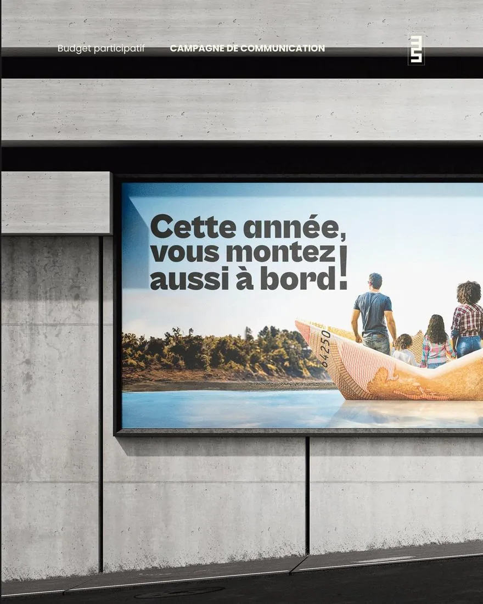
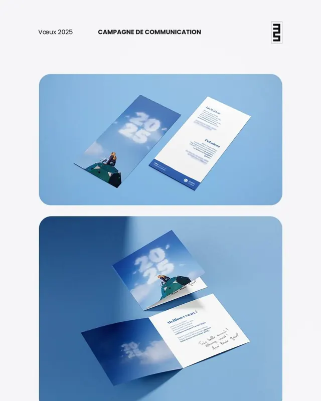
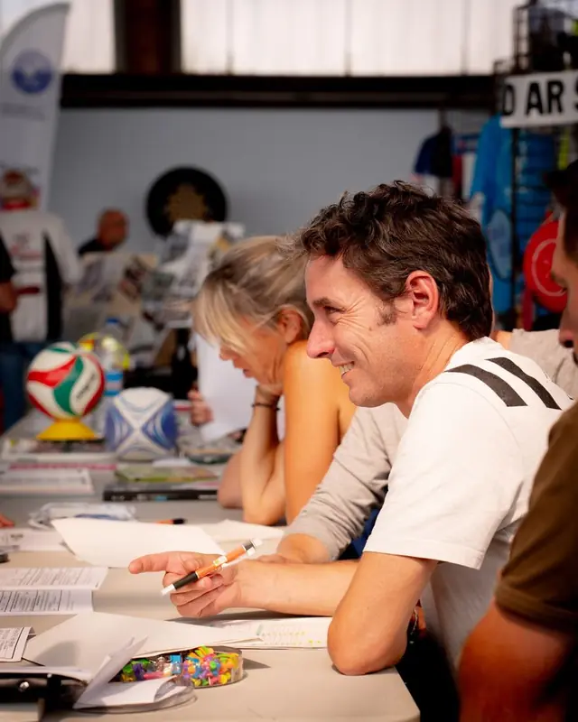
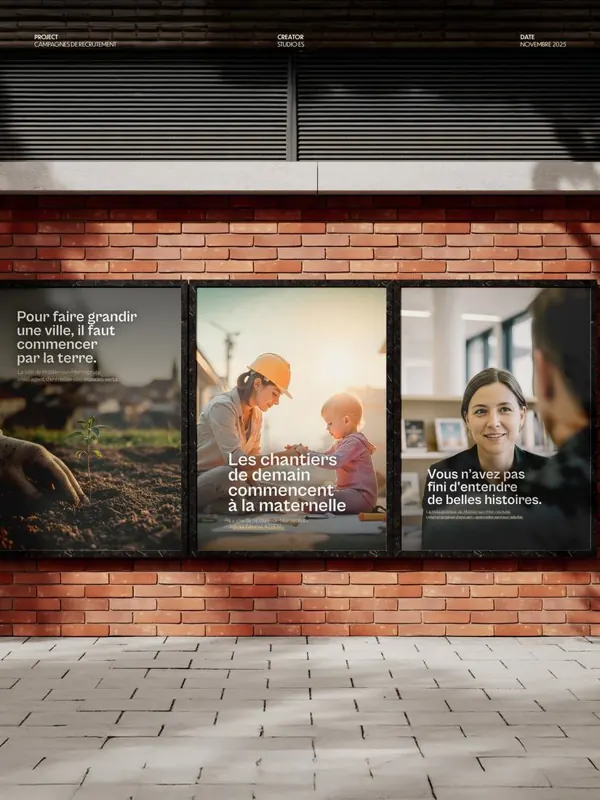
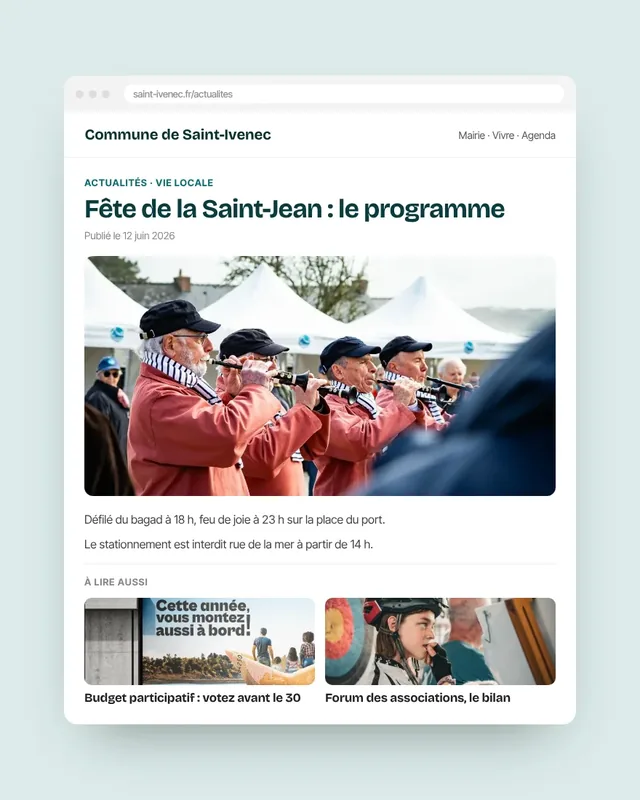
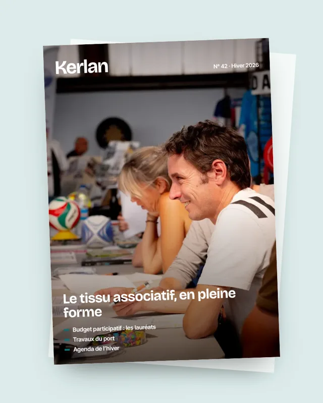
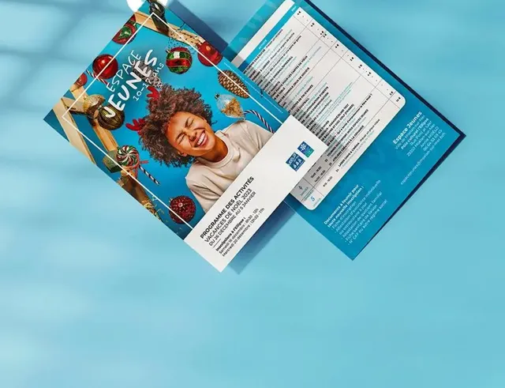
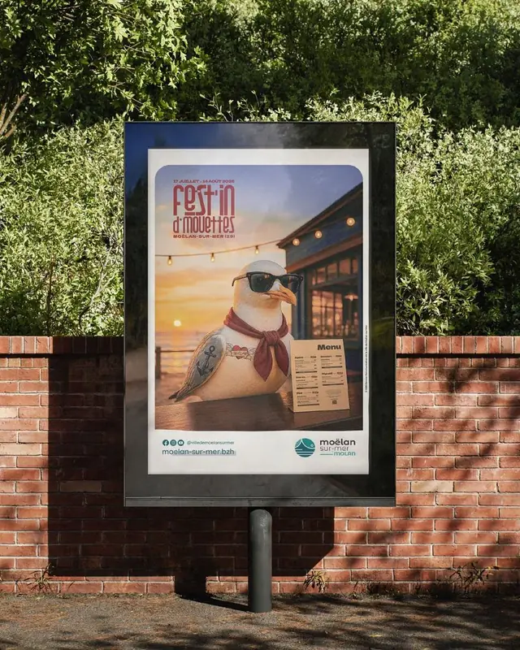

Petite commune
Le secrétariat de mairie fait déjà tout
Fill prend la production : la mairie transmet l’information, puis valide.
AccueilCommunes et collectivités
Pour les communes sans service communication, les postes vacants et les intercommunalités qui manquent de bras : bulletin, site, réseaux, presse, affichage.



Petite commune
Fill prend la production : la mairie transmet l’information, puis valide.
Poste vacant ou absent
Relais tient le poste jusqu’à l’arrivée de la personne recrutée, puis remet un dossier de passation complet.
Service existant
Bulletin, pics d’activité, photo : Fill prend un périmètre défini, le service garde la stratégie et la relation aux élus.
Des supports courants, réalisés par Studio ES pour des collectivités. Les pièces marquées « Exemple » sont fictives.


Exemple
Exemple

Les contenus informent sur l’action publique, sans valoriser une équipe ni une personne. Les prises de position restent l’affaire des élus.
Avant une élection, les publications sont relues avec cette contrainte et les doutes vous sont signalés avant parution.
Élus, direction générale ou secrétariat de mairie : votre circuit est écrit dans la fiche de fonctionnement, et respecté.
Fill travaille dans vos outils (site, application, réseaux, bulletin) et publie des contenus accessibles : textes alternatifs, contrastes, documents lisibles.
Sous 60 000 € HT sur toute la durée du besoin, un marché de services peut être conclu sans publicité ni mise en concurrence préalables. Deux ans de Régulier représentent 23 760 € HT ; la facture mensuelle est déposée sur Chorus Pro.
Le seuil de 60 000 € HT s’applique depuis le 1er avril 2026. La valeur se calcule sur toute la durée du besoin, reconductions comprises, en additionnant les prestations de même nature.
Ces montants sont un repère, pas une autorisation : il revient à votre structure d’estimer son besoin réel, de vérifier qu’aucun autre achat de même nature ne s’y ajoute et de ne pas contracter systématiquement avec le même prestataire.
Oui pour tout ce qui se fait à distance : site, réseaux, bulletin, presse, visuels. Les reportages photo se font en Bretagne, dans un rayon de 40 km, sur les unités de la formule (à partir de Régulier) ; au-delà, sur devis.
Vous. Fill rédige et met en forme, la personne désignée valide, et les prises de parole politiques restent celles des élus.
Un numéro de 12 pages vaut 24 unités, à produire le mois de sa sortie. Il tient dans Soutenu, ou dans Régulier si le mois précédent laisse au moins 2 unités en report. Avec Essentiel, ce numéro dépasserait le forfait. Au-delà de 12 pages, un devis spécifique est établi.
Les demandes passent par une personne désignée, qui arbitre les priorités. Une demande arrivée par un autre canal lui est renvoyée.